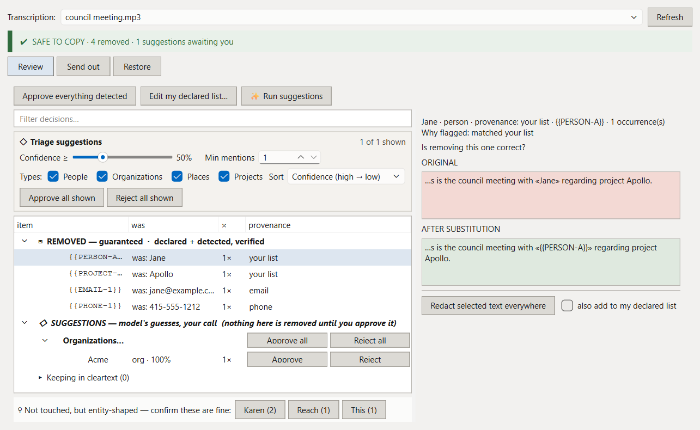
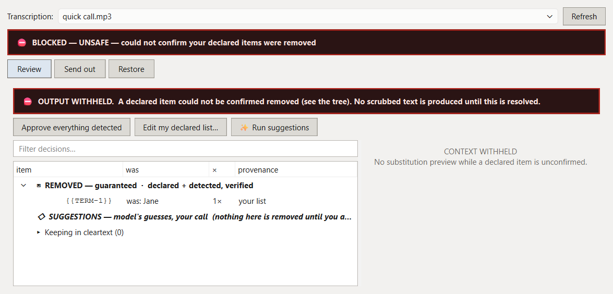
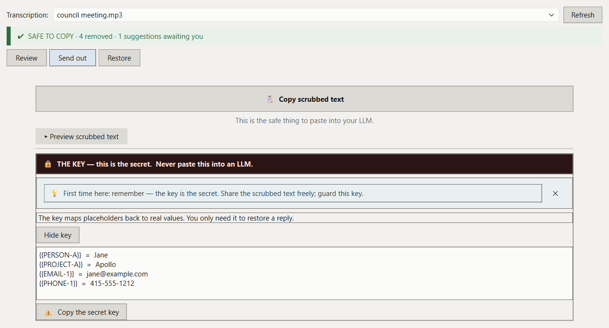

Sanitizer: Scrub Transcripts Before the LLM Sees Them
Buzz, the open-source transcription app, shipped a plugin system in v1.5.5, and I've released a plugin for it. Sanitizer scrubs a transcript before you paste it into a cloud LLM: names, PII, and project codenames become placeholders, and when the LLM's reply comes back, the real values get filled back in. The map from placeholder to real value is a key that never leaves your machine.
Jane briefed Apollo at jane@acme.com
↓ scrub (safe to paste anywhere)
{{PERSON-A}} briefed {{PROJECT-A}} at {{EMAIL-1}}
↓ paste the reply back
restored, with the real names (key.json stayed home)The problem this solves is one I kept running into personally. Meeting transcripts are exactly the kind of thing you want an LLM to summarize, and exactly the kind of thing you shouldn't paste into one: they're dense with names, contact details, and the internal codenames that make a leak identifiable. The transcription itself already runs locally, on Buzz, on Whisper. It seemed wrong for privacy to fall apart at the last step because summarization lives in the cloud.
Detection happens in three layers, in decreasing order of certainty. Declared terms are the names and projects you list yourself, and their removal is guaranteed. Six PII patterns cover email, phone, credit card, SSN, IP address, and URL, each with its own switch, also guaranteed when enabled. The credit card pattern runs a Luhn checksum first, so it isn't flagging every sixteen-digit number it meets. The third layer is a local NER model (GLiNER, vendored into the plugin so it can't conflict with Buzz's own ML stack) that reads the transcript and proposes the entities you didn't think to declare. That layer is a model's guess rather than a pattern match, so it only proposes; nothing it finds is removed until you approve it in the review window.

The design decision I'm most attached to is in the bottom strip of that window. Alongside everything Sanitizer removed, it shows the entity-shaped words it didn't remove, so a miss is as easy to catch as a find. Most redaction tools show you their successes, and if they missed something, you find out later, from someone else. The honest failure mode of a tool like this is the miss, so the interface points a light directly at the most likely candidates for one.
The same thinking is behind the fail-closed rule. If a declared term can't be confirmed gone from the output, Sanitizer doesn't produce a best-effort result with a warning label. There is no output. The screen says BLOCKED — UNSAFE and withholds the text until the situation is resolved, because a scrubbing tool that hands you a maybe-clean transcript is worse than no tool at all.

Those promises are written down as eight guarantees, and each one is backed by an automated test that fails the build if it breaks: no network calls in the detection path, no declared term survives, removals restore exactly (including through a markdown round trip), segment timing is never altered, same input gives same removals, and so on. Under the hood the core detection and substitution logic has no dependency on Buzz or Qt at all, which is enforced by an AST check in the test suite rather than by my good intentions. The hosting layer that wires it into Buzz's plugin API is a thin adapter on top.

What it doesn't do also matters. Sanitizer reduces disclosure risk; it is not a compliance certification, and it won't catch what you never declared or enabled a detector for. The suggestion model is a safety net for the thing you forgot, not a promise that forgetting is safe.
Install is a zip: grab it from Releases, then in Buzz go to Help → Plugins → Add by URL and paste the download link. Restart Buzz afterward, since plugin modules are cached on load. The code, the full guarantee list, and the tests that enforce it are all in the repo. If it misses something it shouldn't have, I want to know.